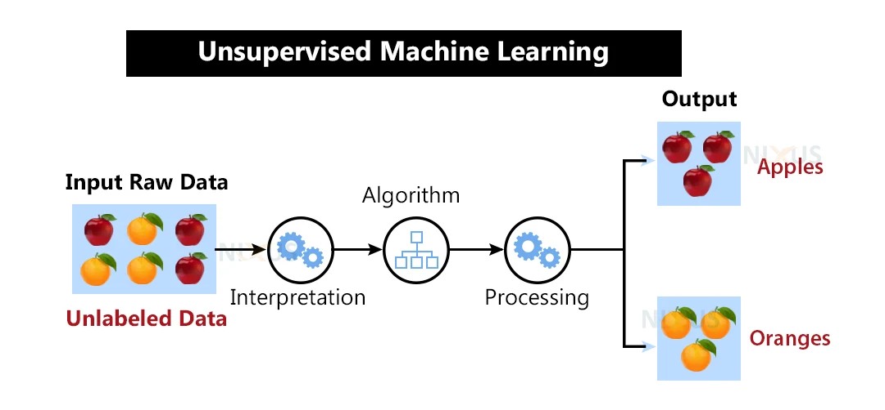
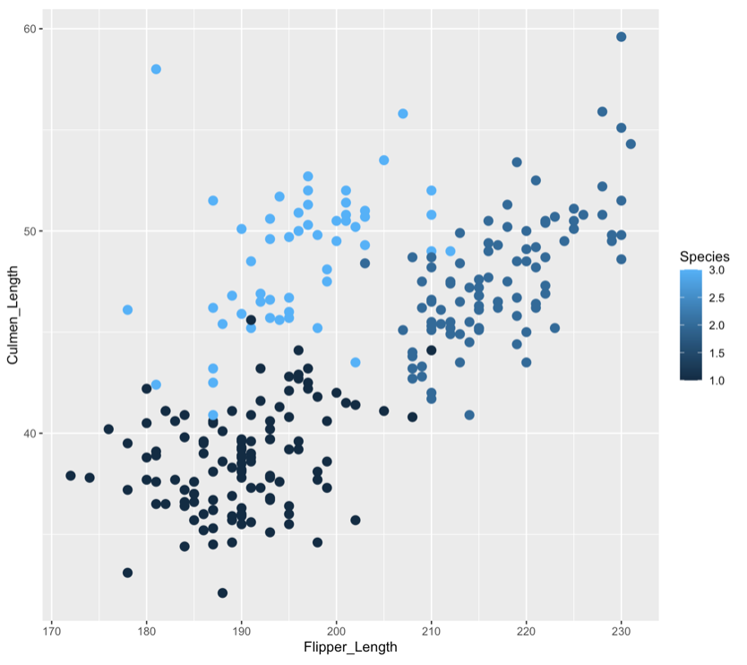

Home of Unsupervised Learning
Unsupervised learning is when data is trained but it does not have any labels. So, if you think about a picture of different elements, like fruits. In the image there many be many different fruits; apples, bananas, etc. If supervised learning was to be used, we would tell our model what each of these items are, like the colour and size. In unsupervised learning, we leave it for the algorithm to find the structure of the data.
Here is a graphical representation of how unsupervised learning works.
This can be found at https://nixustechnologies.com/unsupervised-machine-learning/
This has some benefits for us as users of AI. Unsupervised algorithms are certainly more complex, mostly because we do not know what the trained data will find. This makes it good for finding anomalies in datasets, which in turn can be used to our advantage. For example, unsupervised learning is used in banking fraud detection. If our algorithm in realtime can find an anomaly, in this case banking fraud, then the transaction can be stopped before the crime takes places. There are many other examples of unsupervised learning that will be discussed in the next section.
Take a look at this video to learn more about unsupervised learning
Clustering
One of the main applications of unsupervised learning is to cluster the data. This is the method used to detect anomalies in data, like the fraud example given above. Here you can see that data has been clustered based on certain variables. This is an example of clustering penguins, from this you can see that the penguins have been clustered.
Association
This is another method of unsupervised learning that is common. In association learning, a model looks for frequencies or patterns. For example, if you watch certain shows and genres on Netflix, then Netflix will recommend similar shows to you. Or if you buy certain products in a shop, then similar products, or products that are also bought with your products are advertised to you.
Because of this algorithms ability to find the patterns, it is often used in market research, like in supermarkets to advertise products that customers may also want to buy, or it may be used to determine where items should be located in a store for greater returns. It is also used in recommender systems on the likes of Spotify and Netflix. It also has a use in medical diagnosis systems, for example, if certain symptoms are being displayed, then the algorithm could find the diagnosis.